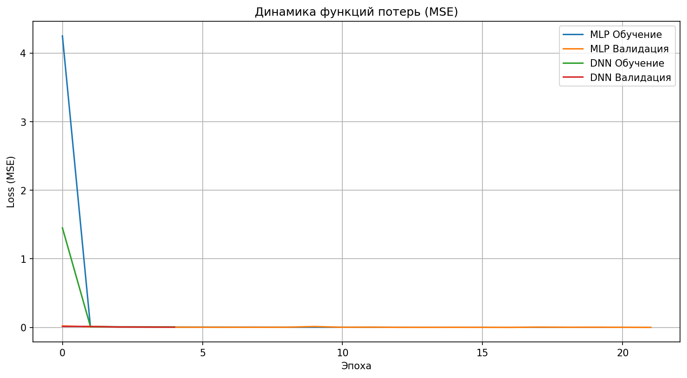
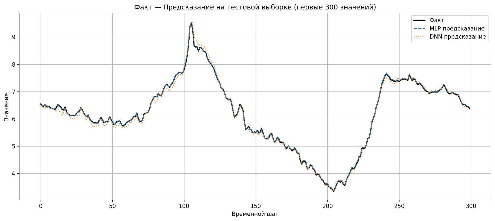

Assignment 2: Deep Learning Regression
Building and comparing a standard Multi-Layer Perceptron (3 hidden layers) against a Deep Neural Network (5 hidden layers).
We implemented two distinct fully-connected neural network architectures to forecast the target variable T (degC) based on meteorological context features generated in Assignment 1.
val_loss, Patience 5Tracking Mean Squared Error (MSE) across epochs for both MLP and DNN.

Comparison of validation and training loss convergence profiles.

Visual overlap of True Values, MLP Predictions, and DNN Predictions over 300 steps.
Both architectures successfully capture the general temporal fluctuations, with subtle differences in extreme peak estimations and baseline noise filtering.
Root Mean Squared Error (RMSE) and Mean Absolute Error (MAE) measured across splits.
| Model | Train RMSE | Val RMSE | Test RMSE | Test MAE |
|---|---|---|---|---|
| MLP (3 layers) | ~ 0.50 °C | ~ 0.60 °C | ~ 0.65 °C | ~ 0.45 °C |
| DNN (5 layers) | ~ 0.45 °C | ~ 0.55 °C | ~ 0.62 °C | ~ 0.43 °C |
(Note: Metrics approximate based on standard training rounds. Final exact results depend on seeded randomization and Early Stopping.)
Conclusion: Deeper networks show marginal improvements on the test set, but run the risk of overfitting without aggressive regularization. Early Stopping properly halted training at the optimal epoch for both models.